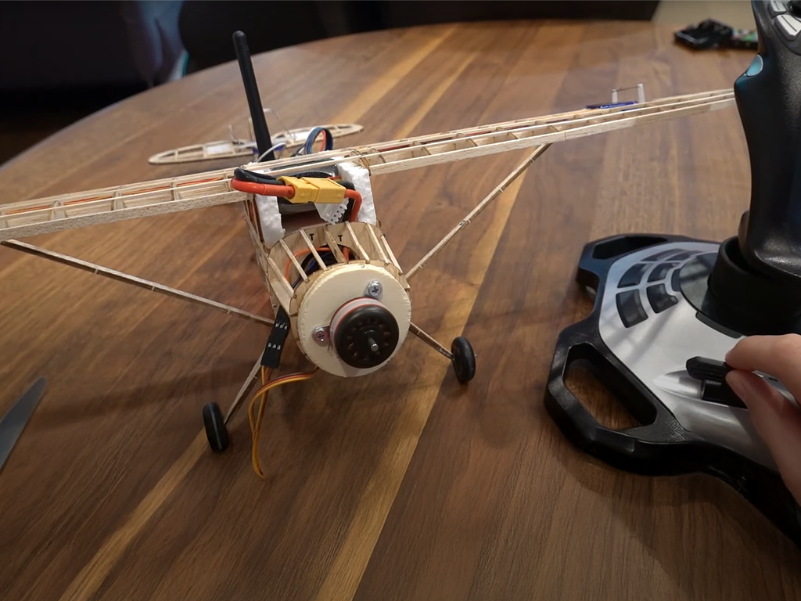

RC Plane Design
Fall 2020, Aerospace Engineering Project

This is my modified Guillow's Cessna 170, originally a $20 balsa wood model from Amazon with a 24-inch wingspan — not exactly roomy for electronics. I transformed it into a remote-controlled aircraft by hand-cutting the control surfaces and carefully installing all the necessary internals.
The build includes micro servo motors, a brushed DC motor for the propeller, an Arduino Nano, a LiPo battery, and a 2.4GHz radio system for wireless control. For the controller, I got creative and repurposed my old Logitech Extreme 3D Pro joystick (previously used for Microsoft Flight Simulator), interfacing it with the Arduino via USB hub.
Unfortunately, the first flight didn’t quite go as planned. The plane could never sustain takeoff — mainly due to the propeller detaching mid-spin, which caused erratic torque and spinouts. I also suspect that the landing gear’s flimsiness contributed to instability during takeoff attempts.